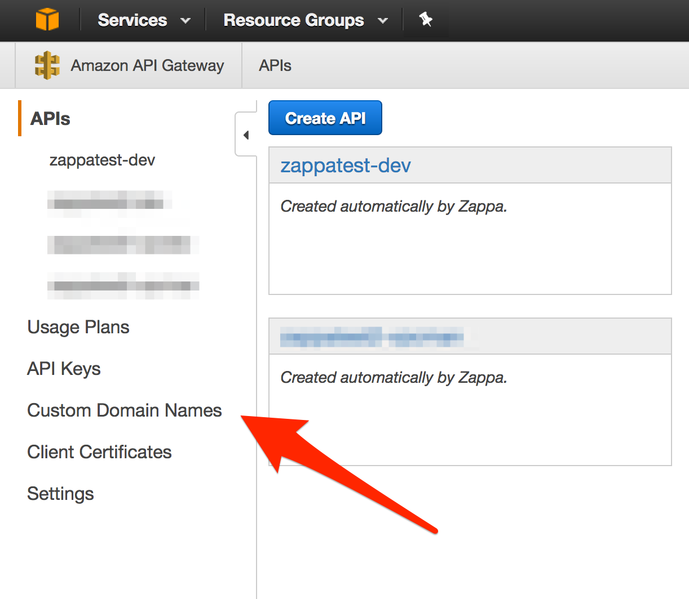

Using a Custom Domain¶
If you've followed the walkthroughs thus far, you've at least created a working Django site using Zappa But the URL provided by Zappa is pretty darn ugly. Not only does it use an apparent random domain name, but the Zappa environment is used as the path. For example:
https://bnu0zcwezd.execute-api.us-east-1.amazonaws.com/dev/
^^^^^^^^^^^^^^^^^^^^^^ ^^^
Auto Generated API Gateway Your Zappa Environment
Ideally most sites would be something like:
https://www.zappaguide.com/
This is entirely possible with Zappa - so how do we get there?
Let's talk about HTTPS¶
Perhaps you're wondering why we are introducting the concept of HTTPS when the topic of this walkthough is using a custom domain. Zappa provides an automated way of creating the necessary custom domain mappings as a part of using encryption. Thus many of the techiques described in this walkthough will ultimately end up with a custom domain along with HTTPS.
In an effort to make the process straightforward, we are therefore bundling HTTPS as part of the walkthough. Philosophical arguments for HTTPS are made elsewhere. But with free services like "Let's Encrypt" and AWS Certificate Manner (free for API Gateways) there is no additional cost burden to leverage HTTPS certificates.
Note that we refer to HTTPS instead of SSL and or TLS where appropriate.
As a final note, if you are really opposed to encryption, or need unencrypted traffic for some reason, we will provide a method to accomplish this at the end of the walkthrough.
Overview of the process¶
There are a number of services that are involved in this process:
- Domain Name Registrar - Allows you to purchase and register domain names
- DNS Providers - Allows you to host things online using that domain name
- Certificate Authority (CA) - Provides encryption certifications to encrypt traffic for the site
Combined with Zappa, these services will all be used in this walkthrough. Note that many companies and organizations can provide these services and some, like Amazon, can provide all three.
Ultimately, the AWS API Gateway will be associated with a new, dedicated CloudFront distribution that not only leverages the digital certificate to provide HTTPS, but also hides the Zappa environment path. Finally, a DNS record will point to this new CF Distro to complete the experience for the end user.
Registering your Custom Domain¶
First you need a registered domain. It doesn't matter who your domain registrar is as long as you have control over the name server records to point to a DNS provider. Of all the services, this one is the most generic and almost any Registar will do.
Let's choose an example domain for this walkthrough:
www.zappaguide.com
Choices¶
At this point, you have a registered domain name and a working Zappa deployment. There are two options:
-
Use the built-in Zappa commands
The Zappa project has a very easy way of associating your custom domain name with your Zappa deployment. For most circumstances, this will meet the needs of most applications.
What happens behind the scenes is that Zappa tells the AWS API Gateway to associate a private AWS CloudFront distribution with the Custom Domain along with an HTTPS certificate. This CloudFront distribution cannot be configured, but will faithfully pass along HTTP requests as needed.
It's easy to use and gets you up and running quickly.
-
Manage your own CloudFront Distribution
The private CloudFront distribution created with the API Gateway is fine, but sometimes you need more control. The alternative is to create your own AWS CloudFront distribution. By doing this, you may still associate a Custom Domain Name, still use ACM HTTPS; but you have additional control - essentially the full power of AWS CloudFront.
This will let you configure caching timeouts for multiple paths. So if you have a fairly static landing page, the cache timeout could be days or weeks; while the user account page may have cache of seconds or minutes. Advanced caching could include query parameters and/or cookies.
Thus the control of the caching behavoir is vastly increased, so is the complexity of managing the CloudFront distribution. In some cases, the additional complexity is necessary or even required.
Using the built-in Zappa commands¶
Zappa has some built-in functionality that streamlines the process of associating a Custom Domain Name with your Zappa deployment. Since there are so many service providers, we focus on a couple combinations that work best. Use the chart below to select the scenario that best matches your situation and follow only one set of instructions.
| DNS Provider | CA | Notes | Instructions |
|---|---|---|---|
| Route53 | AWS Certificate Manager | All AWS combo makes this ridiculous easy | see below |
| Route53 | Let's Encrypt | Another good option that Zappa has smoothed the way | see below |
| Other DNS | ACM or Let's Encrypt | There are more manual steps | see below |
| Other DNS | Other | You got some work to do | see below |
Option 1: Route53 and ACM¶
This option assumes that you will be using AWS Route53 and Amazon Certficate Manager for all functions, except perhaps the domain registration itself. Therefore any domain registrar will work under this option be it NameCheap, GoDaddy, or anyone else. Of course the domain name can be registered with Route53.
Step 1.1: Create a Hosted Zone in Route53¶
If your Registrar is also Route53, skip this step and move on to Step 2. AWS did this for you when you registered the domain.
Follow the instructions for creating a hosted zone in Route53
Step 1.2: Create your digital certificate in ACM¶
Follow the instructions for requesting a certificate in the ACM console
Be sure to record the ARN for the newly issued certificate.
Step 1.3: Edit the Zappa Settings File¶
Now we add the following to our Zappa settings file. These settings prepare Zappa to configure our API gateway properly.
{
"dev": {
"django_settings": "frankie.settings",
"s3_bucket": "zappatest-code",
"aws_region": "us-east-1",
"vpc_config" : {
"SubnetIds": [ "subnet-f3446aba","subnet-c5b8c79e" ], // use the private subnet
"SecurityGroupIds": [ "sg-9a9a1dfc" ]
},
"certificate_arn": "arn:aws:acm:us-east-1:738356466015:certificate/1d066282-ce94-4ad7-a802-2ff87d32b104",
"domain": "www.zappaguide.com",
}
}
For the certificate_arn use the ARN value obtained in step 2 above. For the domain here we could choose either www.zappaguide.com or zappaguide.com, but not both. In order to handle both, either a redirect must occur or you can setup another CloudFront Distribution manually.
Step 1.4: Run Certify¶
This final step triggers your local Zappa environment to reach out to AWS and configure your API Gateway to honor the domain name specified.
(ve) $ zappa certify dev Calling certify for environment dev.. Are you sure you want to certify? [y/n] y Certifying domain www.zappaguide.com.. Created a new domain name with supplied certificate. Please note that it can take up to 40 minutes for this domain to be created and propagated through AWS, but it requires no further work on your part. Certificate updated! (ve) $
And that should work fine going forward
Note
Amazon official documentation states that this step could take up to 40 minutes to initialize the certificate.
Warning
This command must be run in the US East (N. Virginia) (us-east-1). See AWS documentation for more details.
Option 2: Route53 and Let's Encrypt¶
Step 2.1: Create a Hosted Zone in Route53¶
If your Registrar is also Route53, skip this step and move on to Step 2. AWS did this for you when you registered the domain.
Follow the instructions for creating a hosted zone in Route53
Step 2.2: Create an AWS RSA Key¶
Zappa will interact automatically with Let's Encrypt on your behalf, but first you must create an RSA key to identify your account to Let's Encrypt.
To generate it, simply run:
(ve) $ openssl genrsa -out le-account.key 2048 Generating RSA private key, 2048 bit long modulus ...........................................................................................................................+++ ..........+++ e is 65537 (0x10001) (ve) $
Be sure to protect this key because it will enable HTTPS certificates to be generated and you will not be able to update an HTTPS certificate if you lose it.
Note
Note that this is a 2048b key. It's generally preferred to use a stronger 4096b key, but AWS does not yet support keys larger than 2048b.
Step 2.3: Edit the Zappa Settings File¶
Now we add the following to our Zappa settings file. These settings prepare Zappa to configure our API gateway properly.
{
"dev": {
"django_settings": "frankie.settings",
"s3_bucket": "zappatest-code",
"aws_region": "us-east-1",
"vpc_config" : {
"SubnetIds": [ "subnet-f3446aba","subnet-c5b8c79e" ], // use the private subnet
"SecurityGroupIds": [ "sg-9a9a1dfc" ]
},
"lets_encrypt_key": "le-account.key", // Local path to account key - can also be s3 path
"domain": "www.zappaguide.com",
}
}
Step 2.4: Run Certify¶
This final step triggers your local Zappa environment to reach out to AWS and configure your API Gateway to honor the domain name specified.
(ve) $ zappa certify dev Calling certify for environment dev.. Are you sure you want to certify? [y/n] y Certifying domain www.zappaguide.com.. Created a new domain name with supplied certificate. Please note that it can take up to 40 minutes for this domain to be created and propagated through AWS, but it requires no further work on your part. Certificate updated! (ve) $
And that should work fine going forward. Note that Let's Encrypt certificates only last for 3 months so you should ensure you update the certificate before the 3 months expire.
Note
Amazon official documentation states that this step could take up to 40 minutes to initialize the certificate.
Other Service Providers¶
If you choose to use your own DNS provider and/or your own Certificate Authority to create the custom domain names, you will have to perform the manual steps outlined in the official AWS documentation:
In this case, I would recommend against using the built-in Zappa commands because of unexpected side effects.
Troubleshooting¶
Using your own domain name can be one of the most frustrating experiences, especially due to the potential for a long delay while AWS is creating/setting up the necessary components. Here we list some of the common errors that you may get when you think everything is working.
403 - Forbidden!¶
Sometimes you may encounter the dreaded '403 - Forbidden message':
{"message":"Forbidden"}
Often this happens when the user runs zappa certify but has not completed all the steps or correctly configured the zappa settings file. The best way to handle this is generally to manually remove any partially configured custom domains from the AWS console and then try to run zappa certify again. Follow these steps to remove any partial custom domain remnants.
Step 1 - Browse to API Gateway -> Custom Domain¶

Step 2 - Remove the Custom Domain Mapping¶

Step 3 - Re-run zappa certify¶
Django is redirecting to the raw url¶
Another mistake often seen is that when a form is submitted or another HTTP redirect happens, the URL generated is no longer the custom domain, but rather the 'raw' API Gateway URL. If you see this, most often you are missing the domain parameter in the zappa settings file.
Manage Your Own CloudFront Distribution¶
The private CloudFront distribution created with the API Gateway is fine, but sometimes you need more control. The alternative is to create your own AWS CloudFront distribution. By doing this, you may still associate a Custom Domain Name, still use ACM HTTPS; but you have additional control - essentially the full power of AWS CloudFront.
This will let you configure caching timeouts for multiple paths. So if you have a fairly static landing page, the cache timeout could be days or weeks; while the user account page may have cache of seconds or minutes. Advanced caching could include query parameters and/or cookies.
Thus the control of the caching behavior is vastly increased, so is the complexity of managing the CloudFront distribution. In some cases, the additional complexity is necessary or even required.
Create a CloudFront Distribution¶
To get started, follow these instructions
Some key parameters:
- Select 'Web' Distribution
- For Origin Domain Name, use the Zappa distribution domain name (e.g. 'bnu0zcwezd.execute-api.us-east-1.amazonaws.com')
- For Origin Path, use the Zappa deployment name (e.g. 'dev')
- For Object Caching:
- If you'd like to use Django to control the cache, select 'Use Origin Cache Headers'
- If you'd like to setup static cache timeouts, select 'Customize'
- Use the Minimum TTL, Maximum TTL, and Default TTL to specify how long (in seconds) to cache objects
- You can add additional paths as needed
- Compress Objects Automatically, we recommend True
Associate HTTPS certificate¶
Follow these instructions to associate your new distro with a SSL/TLS certificate.
Then create additional 'Origins'¶
So now that you have your default origin configured you can add additional ones. And you can point to various url paths in your application to configure the cache timings and other behavoirs like compression and so on.